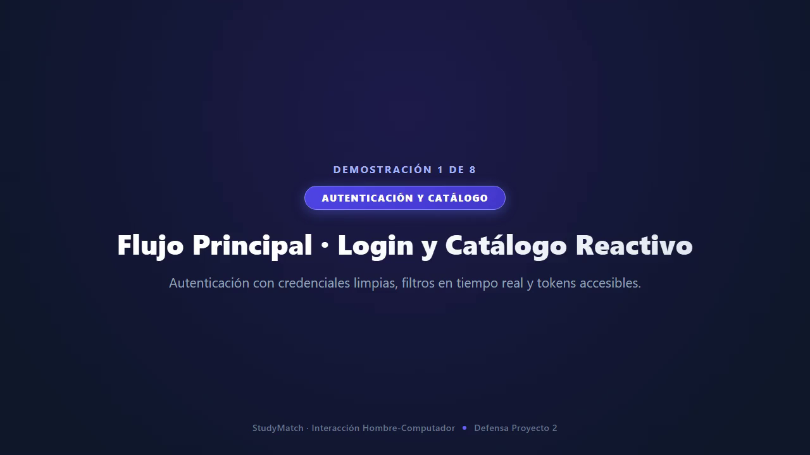

Diseño Centrado en el Usuario · Tokens Semánticos Figma ↔ CSS · Erradicación Demostrable de Patrones Oscuros (Clase 22) · Accesibilidad Universal WCAG 2.1 AA (100/100 Lighthouse).

Superación de la desorganización de grupos informales mediante contratos de interacción transparentes y predecibles.
Tokens semánticos sincronizados al 100% y puntuación perfecta (100/100) en Lighthouse.
tokens.css.Grabación interactiva estilo manual de usuario con cursor guiado, clics señalizados y separadores de título.
Aplicación rigurosa de las leyes de Fitts, Hick y el Principio de Honestidad de la Clase 22.
cupo - inscritos.Verificación formal automatizada y cierre de la defensa.
docs/cobertura/index.html.